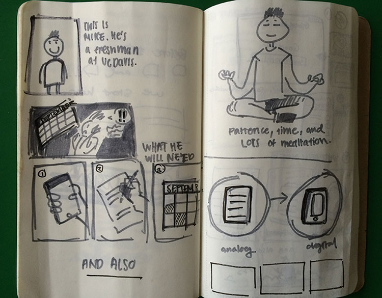
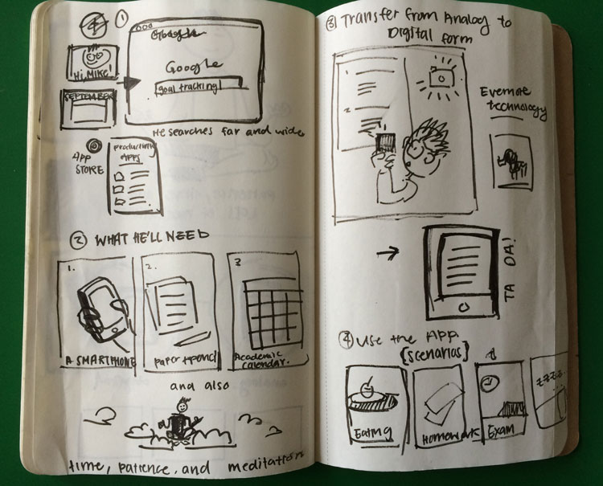

Storyboard One
 These are two attempts at storyboarding, showing how the user would come accross the goal tracking app. It follows the story of a freshman at UC Davis who is starting off his first academic year and is confused about what he wants. He searches for solutions on google and sees the app on the the myUCDavis page. After downloading, he'll need a pencil, paper, a smartphone, and an academic calendar. After a lot of thought and thorough meditation, he will record his goals that involve into the app.
My first story board iteration lacked transistion on how Mike was able to find the app in the first place on how transfer would work from analog to digital form. In my second iteration, I addressed these issues in the second round (the second photo) by adding a small sketch of a google search and adding a sketch of an Evernote notebook integration.